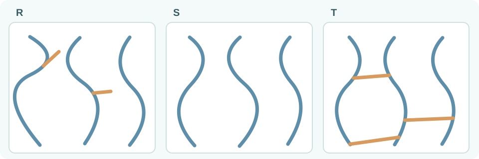
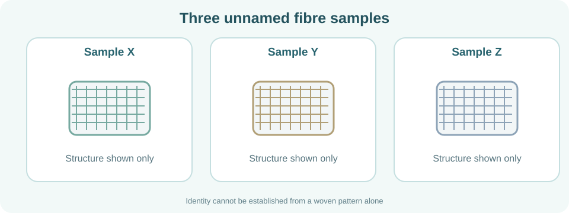
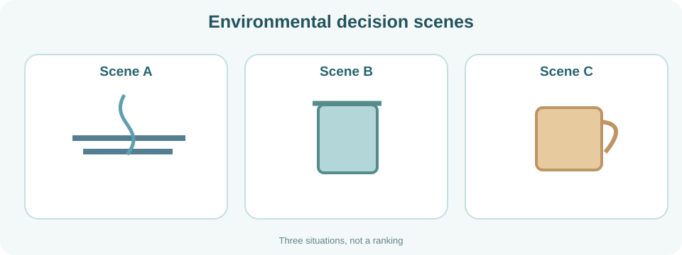

เติมบทความ: แยกวัสดุออกจากผลิตภัณฑ์
กลับไปอ่าน: ใบเรียนรู้ L01 · วัสดุและผลิตภัณฑ์
สิ่งที่นำมาใช้ผลิตเป็นสิ่งของเรียกว่า
[ ]
ส่วนสิ่งของที่สร้างขึ้นเพื่อใช้งานเรียกว่า
[ ]
การเลือกใช้วัสดุขึ้นกับ
[ ]
ที่เหมาะกับหน้าที่
- วัสดุ
- ผลิตภัณฑ์
- สมบัติ
- มอนอเมอร์
- พอลิเมอร์
- อุณหภูมิ
- รูปร่าง
วัสดุใช้ทำผลิตภัณฑ์ สมบัติช่วยตัดสินใจเลือกวัสดุ
Materials make products; properties help guide the choice.
เลือกวิธีตรวจให้ตรงกับสมบัติ

กลับไปอ่าน: ใบเรียนรู้ L01 · วิธีทดสอบสมบัติ
ทดสอบรอยขีดเพื่อพิจารณา
[ ]
วงจรหลอดไฟช่วยตรวจ
[ ]
และการเปรียบเทียบรูปร่างก่อน–หลังเอาแรงออกช่วยตรวจ
[ ]
ของวัสดุ
- ความแข็ง
- การนำไฟฟ้า
- สภาพยืดหยุ่น
- การหลอมเหลว
- ความทึบแสง
- มวล
- ปริมาตร
การทดสอบแต่ละวิธีบอกสมบัติต่างกัน
Each test examines a different property.
กลับไปอ่าน: ใบเรียนรู้ L01 · ศัพท์วิทยาศาสตร์
ความต้านทานต่อการเกิดรอยขีดคือ
[ ]
การกลับรูปเดิมหลังหยุดออกแรงเรียกว่า
[ ]
และวัสดุที่ยอมให้กระแสผ่านได้น้อยมากคือ
[ ]
- ความแข็ง
- สภาพยืดหยุ่น
- ฉนวนไฟฟ้า
- ตัวนำไฟฟ้า
- เปราะ
- ผลิตภัณฑ์
- พอลิเมอร์
แยกความแข็ง สภาพยืดหยุ่น และฉนวนไฟฟ้าให้ถูกต้อง
Distinguish hardness, elasticity and an insulator.
เติมบทความ: หน่วยย่อยกลายเป็นสายโซ่

กลับไปอ่าน: ใบเรียนรู้ L02 · มอนอเมอร์และพอลิเมอร์
โมเลกุลตั้งต้นที่ใช้สร้างพอลิเมอร์เรียกว่า
[ ]
เมื่อเกิดปฏิกิริยา
[ ]
หน่วยต่าง ๆ เชื่อมต่อกันทางเคมีจนเกิด
[ ]
ที่มีหน่วยซ้ำจำนวนมาก
- มอนอเมอร์
- พอลิเมอไรเซชัน
- พอลิเมอร์
- ฉนวน
- ความแข็ง
- การหลอม
- วัสดุ
มอนอเมอร์เข้าปฏิกิริยาเชื่อมต่อเป็นพอลิเมอร์
Monomers react and join to form a polymer.
กลับไปอ่าน: ใบเรียนรู้ L02 · อ่านภาพจำลอง
รูป A คือหน่วยย่อยหรือ
[ ]
หลายหน่วยที่เชื่อมเป็นสายเรียกว่า
[ ]
และรูปแบบที่ซ้ำตามสายโซ่เรียกว่า
[ ]
- มอนอเมอร์
- สายโซ่พอลิเมอร์
- หน่วยซ้ำ
- ผลิตภัณฑ์
- ความร้อน
- เซรามิก
- ความต่างศักย์
มอนอเมอร์เป็นหน่วยเริ่มต้น ส่วนสายโซ่เป็นกลุ่มหน่วยเชื่อมทางเคมี
A monomer is the starting building block; a chain contains linked units.
เติมคำศัพท์จากหลักฐานในบทอ่าน
กลับไปอ่าน: ใบเรียนรู้ L02 · คำศัพท์ภาษาอังกฤษ
ปฏิกิริยาที่เชื่อมหน่วยย่อยให้เป็นสายโซ่คือ
[ ]
ส่วนหน่วยโครงสร้างที่พบซ้ำคือ
[ ]
พันธะที่เชื่อมหน่วยเข้าด้วยกันคือ
[ ]
- พอลิเมอไรเซชัน
- หน่วยซ้ำ
- พันธะเคมี
- การหลอมเหลว
- ความแข็ง
- ฉนวนไฟฟ้า
- ผลิตภัณฑ์
กระบวนการสร้างสายโซ่ต้องมีการเชื่อมทางเคมี
Polymer formation involves chemical linking.
เติมเนื้อหา: ใช้เกณฑ์แหล่งกำเนิดย้อนอ่านใบเรียนรู้ L03 · อ่านนิยามและดูภาพ
พอลิเมอร์ที่พบในธรรมชาติ เช่น แป้ง เรียกว่า [ ] ส่วนพอลิเมอร์ที่สังเคราะห์ขึ้น เช่น PE เรียกว่า [ ] การจำแนกนี้ดูที่ [ ]
- พอลิเมอร์ธรรมชาติ
- พอลิเมอร์สังเคราะห์
- แหล่งกำเนิด
- การแตกกิ่ง
- สี
- มวล
- โครงข่าย
ธรรมชาติ/สังเคราะห์เป็นการจำแนกตามแหล่งกำเนิด ไม่ได้บอกจำนวนชนิดมอนอเมอร์
Natural and synthetic classify origin, not the number of monomer types.

ย้อนอ่านใบเรียนรู้ L03 · อ่านนิยามและดูภาพ
ภาพ P มีมอนอเมอร์ชนิด [ ] จึงเป็น [ ] ส่วนภาพ Q ใช้มอนอเมอร์มากกว่าหนึ่งชนิดจึงเป็น [ ]
- เดียว
- โฮโมพอลิเมอร์
- โคพอลิเมอร์
- สองชนิดเสมอ
- พอลิเมอร์ธรรมชาติ
- แบบร่างแห
- สังเคราะห์
ภาพ P มี A ชนิดเดียว ส่วน Q มี A และ B
P contains only A; Q contains A and B.
ศัพท์วิทยาศาสตร์: เกณฑ์จำแนกสองแบบย้อนอ่านใบเรียนรู้ L03 · อ่านนิยามและดูภาพ
การจำแนกตามแหล่งกำเนิดใช้คำว่า [ ] และ [ ] ส่วนการจำแนกตามจำนวนชนิดมอนอเมอร์ใช้ [ ] กับ [ ]
- ธรรมชาติ
- สังเคราะห์
- โฮโมพอลิเมอร์
- โคพอลิเมอร์
- แบบเส้น
- ความหนาแน่น
- ยืดหยุ่น
- การนำความร้อน
- สี
สองเกณฑ์คือแหล่งกำเนิดและชนิดมอนอเมอร์ จึงไม่ควรสลับใช้กัน
The criteria are origin and monomer types; they should not be confused.
อ่านรูปโครงสร้าง R, S และ T
ย้อนอ่านใบเรียนรู้ L04 · อ่านภาพและสมบัติ
ภาพ R มี [ ] ภาพ S มี [ ] และภาพ T มี [ ]
- แบบกิ่ง
- แบบเส้น
- แบบร่างแห
- โฮโมพอลิเมอร์
- โคพอลิเมอร์
- ธรรมชาติ
- สังเคราะห์
R มีกิ่ง S เป็นสายโซ่หลักไม่แตกกิ่ง T มีจุดเชื่อมระหว่างสายโซ่
R has side branches, S has unbranched chains, and T has links between chains.
สมบัติจากการจัดเรียงสายโซ่ย้อนอ่านใบเรียนรู้ L04 · อ่านภาพและสมบัติ
เมื่อกิ่งของ PE เพิ่มขึ้น สายโซ่โดยทั่วไปจัดเรียง [ ] จึงอาจมีความหนาแน่น [ ]กว่า ส่วน PE ที่กิ่งน้อยกว่าเรียงชิดได้ง่ายและมีความหนาแน่น [ ]กว่า
- ชิดกันได้น้อยลง
- ต่ำ
- สูง
- เท่ากันเสมอ
- สี
- แหล่งกำเนิด
- พลาสติกทุกชนิด
ข้อสรุปนี้ใช้กับการเปรียบเทียบ PE ภายใต้เงื่อนไขอื่นที่ใกล้เคียงกัน
This comparison concerns polyethylene under otherwise comparable conditions.
คำศัพท์โครงสร้างและสมบัติย้อนอ่านใบเรียนรู้ L04 · อ่านภาพและสมบัติ
คำว่า [ ] หมายถึงแบบกิ่ง คำว่า [ ] หมายถึงมีสายโซ่เชื่อมกัน ส่วน [ ] คือมวลต่อปริมาตร
- Branched
- Cross-linked
- Density
- Natural
- Monomer
- Product
- Melting
การอ่านศัพท์ต้องแยกโครงสร้างกับสมบัติอย่างชัดเจน
Distinguish structure words from a material property such as density.
นักเรียนเปรียบเทียบถุงพลาสติกกับกล่องพลาสติกแข็ง ข้อสรุปใดระมัดระวังทางวิทยาศาสตร์ที่สุดย้อนอ่านใบเรียนรู้ L04 · โครงสร้างและสมบัติ
- ถุงต้องทำจากพอลิเมอร์ธรรมชาติเสมอ
- กล่องทุกชนิดต้องเป็นพอลิเมอร์แบบร่างแห
- สีอธิบายสมบัติได้ทั้งหมด
- อาจต่างกันทั้งชนิดพอลิเมอร์ โครงสร้าง และสารเติมแต่ง ต้องตรวจข้อมูลเพิ่ม
ต้องใช้หลักฐานและระบุปัจจัยหลายอย่างก่อนตัดสินสมบัติ ไม่เดาจากหน้าตาภายนอก
Material selection requires evidence about chemistry, structure and additives, not appearance alone.
เติมบทความจากการให้ความร้อนอ่านใบเรียนรู้ L05 เพื่อหาเหตุผล
พลาสติกที่มักอ่อนตัวเมื่อร้อนและขึ้นรูปใหม่ได้เรียกว่า [ ] ส่วนชนิดที่แข็งตัวเป็นโครงข่ายและหลอมขึ้นรูปซ้ำไม่ได้แบบเดิมเรียกว่า [ ] การพิจารณานี้ดูพฤติกรรมเมื่อได้รับ [ ]
- เทอร์มอพลาสติก
- เทอร์มอเซต
- ความร้อน
- แหล่งกำเนิด
- ความหนาแน่น
- มอนอเมอร์
- ธรรมชาติ
- สี
เทอร์มอพลาสติกอ่อนตัวและขึ้นรูปซ้ำได้ ส่วนเทอร์มอเซตไม่หลอมขึ้นรูปซ้ำแบบเดิม
Thermoplastics can soften and be reshaped; cured thermosets cannot be remelted similarly.
คำศัพท์การขึ้นรูปและสมบัติเมื่อร้อนอ่านใบเรียนรู้ L05 เพื่อหาเหตุผล
เมื่อเทอร์มอพลาสติกได้รับความร้อนอย่างเหมาะสมอาจ [ ] จากนั้นจึงนำไป [ ] ให้เป็นรูปทรงใหม่ แต่เทอร์มอเซตที่แข็งตัวแล้วมี [ ] เชื่อมขวาง
- อ่อนตัว
- ขึ้นรูปใหม่
- โครงข่าย
- ระเหย
- นำไฟฟ้าเสมอ
- เผาให้ลุก
- แหล่งกำเนิด
อ่อนตัว → ขึ้นรูปใหม่สำหรับเทอร์มอพลาสติก ส่วนเทอร์มอเซตมีโครงข่ายเชื่อมขวาง
Softening and reshaping describe thermoplastics; a cross-linked network characterizes thermosets.
อ่านใบเรียนรู้ L05 เพื่อหาเหตุผล
ภาพ X มีสายโซ่ที่ไม่มี [ ] ขณะที่ Y มีสายโซ่เชื่อมกันด้วย [ ] หลายตำแหน่ง จึงอาจจำกัด [ ]
- จุดเชื่อมขวาง
- พันธะเชื่อมขวาง
- การเคลื่อนที่ของสายโซ่
- แหล่งกำเนิด
- การย่อยสลาย
- สี
- มอนอเมอร์
Y มีพันธะเชื่อมขวางจึงจำกัดการเคลื่อนที่ของสายโซ่ได้มากกว่า
The cross-links in Y can restrict relative chain movement.
เติมบทความ: เลือกวัสดุจากสมบัติอ่านใบเรียนรู้ L06 เพื่อหาเหตุผล
ฉนวนหุ้มสายไฟต้องนำไฟฟ้าได้ [ ] ส่วนขวดเครื่องดื่มต้องเหมาะกับการสัมผัส [ ] และการเลือกใช้วัสดุควรดู [ ]
- ไม่ดี
- อาหารหรือเครื่องดื่ม
- สมบัติที่ต้องการ
- สีเพียงอย่างเดียว
- การนำความร้อนสูง
- เสมอ
- แหล่งกำเนิด
- มวลอย่างเดียว
เลือกวัสดุจากหน้าที่และสมบัติ ไม่ใช่เพียงรูปลักษณ์
Materials are selected by function and relevant properties, not appearance alone.
จับคู่ชนิดพลาสติกกับการใช้งาน
อ่านใบเรียนรู้ L06 เพื่อหาเหตุผล
ท่อพีวีซีทำจาก [ ] ลังพลาสติกจำนวนมากทำจาก [ ] ส่วนสารเคลือบกระทะไม่ติดบางชนิดทำจาก [ ]
- PVC
- PP
- PTFE
- PS foam
- PET
- ยางธรรมชาติ
- แป้ง
- โปรตีน
ตัวอย่างที่พบบ่อย: PVC ท่อ, PP ลัง, PTFE เคลือบไม่ติด
Common examples include PVC pipes, PP crates and PTFE non-stick coatings.
อ่านใบเรียนรู้ L06 เพื่อหาเหตุผล
คำว่า [ ] หมายถึงทนทาน [ ] หมายถึงน้ำหนักเบา และ [ ] หมายถึงสารผ่านได้ยาก
- Durable
- Lightweight
- Impermeable
- Recycle
- Homopolymer
- Branched
- Melting
Durable, lightweight และ impermeable เป็นคำอธิบายสมบัติ ไม่ใช่ชื่อพลาสติก
Durable, lightweight and impermeable describe properties rather than polymer names.
เติมชื่อมอนอเมอร์ให้ตรงกับชนิดพลาสติกอ่านอ้างอิง: ใบเรียนรู้ L06 · ตารางตัวอย่างเพิ่มเติม
PE เกิดจาก [ ] และ PS เกิดจาก [ ] ส่วน PTFE เกิดจาก [ ]
- เอทีน
- สไตรีน
- เตตระฟลูออโรเอทีน
- บิวทาไดอีน
- ไอโซพรีน
- ไวนิลคลอไรด์
- ฟอร์มาลดีไฮด์
PE → เอทีน, PS → สไตรีน, PTFE → เตตระฟลูออโรเอทีน
PE → ethene, PS → styrene, PTFE → tetrafluoroethene
กลับไปอ่านใบเรียนรู้ L07 เพื่อหาเหตุผล
ยางที่ได้จากน้ำยางพาราเรียกว่า [ ] ส่วน SBR และนีโอพรีนเป็นตัวอย่าง [ ] คุณสมบัติคืนรูปเมื่อเอาแรงออกเรียกว่า [ ].
- ยางธรรมชาติ
- ยางสังเคราะห์
- สภาพยืดหยุ่น
- โลหะ
- การดูดซับน้ำ
ยางธรรมชาติ ยางสังเคราะห์ และสภาพยืดหยุ่นตามลำดับ
Natural rubber, synthetic rubber, and elasticity in that order.

กลับไปอ่านใบเรียนรู้ L07 เพื่อหาเหตุผล
ฝ้ายเป็นเส้นใย [ ] เรยอนเป็นเส้นใย [ ] ส่วนไนลอนเป็นเส้นใย [ ].
- ธรรมชาติ
- เซลลูโลสแปรรูป
- สังเคราะห์
- เทอร์มอเซต
- โลหะ
จัดกลุ่มตามที่มาและวิธีผลิต ไม่ใช่ตามว่าใช้ทำเสื้อผ้าได้หรือไม่
Classification uses origin and processing, not whether all can make clothing.
ข้อใดเป็นเหตุผลที่ดีที่สุดในการเลือกยางสำหรับสายยางที่สัมผัสน้ำมันกลับไปอ่านใบเรียนรู้ L07 เพื่อหาเหตุผล
- ยางสังเคราะห์ทุกชนิดทนน้ำมันทุกประเภท
- เลือกจากสีของยางอย่างเดียว
- ตรวจชนิดยางและข้อมูลความทนต่อน้ำมันที่ใช้จริง
- ยางธรรมชาติทั้งหมดเหมือนกันทุกสูตร
ยางแต่ละชนิดรวมทั้งนีโอพรีนอาจทนสารบางอย่างได้ต่างกัน ต้องตรวจเงื่อนไขจริง
Rubber types, including neoprene, differ in resistance; check actual service conditions.
กลับไปอ่านใบเรียนรู้ L07 เพื่อหาเหตุผล
เชือกยกของต้องมีความ [ ] ในขณะที่ยางรัดต้องมี [ ] และการปรับยางด้วยพันธะเชื่อมขวางเรียกว่า [ ].
- แข็งแรงต่อแรงดึง
- สภาพยืดหยุ่น
- วัลคาไนซ์
- ความหนาแน่น
- การหลอมเหลว
ความแข็งแรงต่อแรงดึง สภาพยืดหยุ่น และวัลคาไนซ์เป็นคนละแนวคิด
Tensile strength, elasticity and vulcanisation are different concepts.
บทความ: ความแตกต่างของเส้นใยกลับไปอ่านใบเรียนรู้ L07 เพื่อหาเหตุผล
ฝ้ายมักดูดซับ [ ] ได้ดี ส่วนไนลอนมีคุณสมบัติด้าน [ ] ในหลายการใช้งาน จึงต้องเลือกเส้นใยตาม [ ] ของผลิตภัณฑ์
- ความชื้น
- ความแข็งแรงต่อแรงดึง
- หน้าที่
- การนำไฟฟ้า
- สีเพียงอย่างเดียว
สมบัติจริงแตกต่างตามชนิดเส้นใยและผลิตภัณฑ์
Actual performance depends on the fibre and product construction.
เติมชื่อมอนอเมอร์ของยางตามตารางอ้างอิงอ่านอ้างอิง: ใบเรียนรู้ L07 · ตารางตัวอย่างเพิ่มเติม
ยางธรรมชาติส่วนใหญ่เป็นพอลิไอโซพรีนจาก [ ] ส่วน BR เกิดจาก [ ] และ SBR ใช้บิวทาไดอีนร่วมกับ [ ]
- ไอโซพรีน
- บิวทาไดอีน
- สไตรีน
- เอทีน
- ไวนิลคลอไรด์
- โพรพีน
- คลอโรพรีน
ยางธรรมชาติ → ไอโซพรีน; BR → บิวทาไดอีน; SBR → สไตรีน + บิวทาไดอีน
Natural rubber → isoprene; BR → butadiene; SBR → styrene + butadiene
เติมบทความ: ขยะพลาสติกกับสิ่งแวดล้อม
กลับไปอ่านใบเรียนรู้ L08 เพื่อหาเหตุผล
พลาสติกที่ทิ้งลงท่ออาจทำให้ท่อ [ ] ส่วนภาชนะที่มีน้ำขังอาจเป็นแหล่งเพาะพันธุ์ [ ] และการเผากลางแจ้งอาจปล่อย [ ].
- อุดตัน
- ยุง
- ควันและมลพิษ
- ออกซิเจนบริสุทธิ์
- การใช้ซ้ำ
เกี่ยวข้องกับการอุดตัน ยุง และมลพิษจากควัน
Waste management can affect drainage, mosquito breeding and air quality.
กลับไปอ่านใบเรียนรู้ L08 เพื่อหาเหตุผล
การพกแก้วใช้ซ้ำจัดเป็น [ ] การหลีกเลี่ยงของใช้ที่ไม่จำเป็นเป็น [ ] ส่วนการนำขวดสะอาดไปผ่านกระบวนการทำเม็ดพลาสติกใหม่เป็น [ ].
- Reuse
- Reduce
- Recycle
- การเผา
- การทิ้งลงธรรมชาติ
เลือก 3R ตามวิธีจัดการ ไม่ใช่ตามชนิดผลิตภัณฑ์
Distinguish the R by the action, not merely by the item.
กลับไปอ่านใบเรียนรู้ L08 เพื่อหาเหตุผล
การย่อยสลายโดยจุลินทรีย์ภายใต้เงื่อนไขเหมาะสมเรียกว่า [ ] การแตกเป็นชิ้นเล็กโดยไม่ยืนยันการย่อยสลายเรียกว่า [ ] ส่วนการแปรรูปวัสดุใช้แล้วเป็นวัสดุใหม่เรียกว่า [ ].
- Biodegradation
- Fragmentation
- Recycling
- การหลอม
- การยืดหยุ่น
สามกระบวนการนี้ต่างกัน แม้อาจเกิดกับวัสดุเดียวกันในช่วงเวลาต่าง ๆ
The three processes are distinct, even if a material experiences more than one.
กลับไปอ่านใบเรียนรู้ L08 เพื่อหาเหตุผล
ก่อนส่งพลาสติกไปรีไซเคิลควรตรวจว่าเป็นชนิดที่จุดรับ [ ] และวัสดุมีความ [ ] หากมีวัสดุหลายชั้นปนกันอาจต้องพิจารณา [ ] ที่เหมาะสม
- รับ
- สะอาด
- กระบวนการแยกหรือแปรรูป
- สีสด
- ทิ้งลงธรรมชาติ
ต้องพิจารณาชนิดวัสดุ ความสะอาด และความพร้อมของระบบรีไซเคิล
Recycling depends on material type, cleanliness and local systems.
บทความสรุป: เลือกและจัดการวัสดุกลับไปอ่านใบเรียนรู้ L08 เพื่อหาเหตุผล
ก่อนเลือกพอลิเมอร์เราดู [ ] ให้ตรงกับหน้าที่ และหลังใช้ควรลดการเกิด [ ] พร้อมคำนึงถึง [ ] ที่อาจตามมา
- สมบัติ
- ขยะ
- ผลกระทบ
- จุดหลอมเท่านั้น
- สีเท่านั้น
สัมพันธ์ระหว่างสมบัติ หน้าที่การใช้ และผลกระทบ
Connect properties, intended function and environmental impacts.